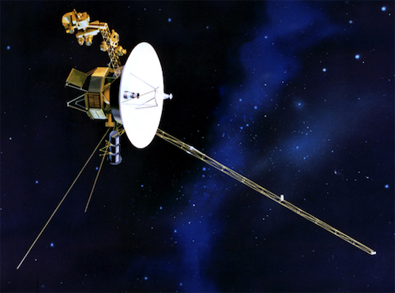

☰
˟
1970s
|
Home
Home
1960
1970
1980
1990
2000
2010
2020
1960
1970
1980
1990
2000
2010
2020
Browser no support
◀
Apollo 13
April 11th, 1970
Apollo 14
January 31st, 1971
Apollo 15
July 26th, 1971
Apollo 16
April 16th, 1972
Apollo 17
December 7th, 1972
Skylab
May 14th, 1973
Apollo-Soyuz
July 15th, 1975
Voyager 1 & 2
1977
